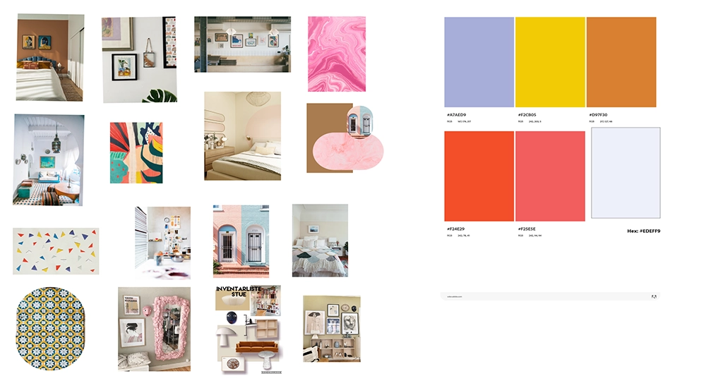

GRUNDLÆGGENDE WEB - EMNESITE
På emnesitet, der var en del af Tema 1, skulle vi med baggrund i det lærte fra mobilsitet, opbygge vores eget website. Websitet skulle handle om en passion, eller interesse vi havde. Jeg har taget udgangspunkt, i min interesse for boligindretning.
Vi skulle, i modsætning til mobilsitet, selv finde billeder til brug på sitet. De skulle være rettighedsfrie og enten vores egne, eller fra et medie, såsom unsplash eller colourbox. Vi skulle konvertere disse billeder, til .webp format og blev herigennem introduceret, til squoosh.app. Udover at formatet skulle være .webp, for at filformaten blev mindre, blev vi også undervist i, at beskære billederne, så de havde samme størrelse. Jeg fik ikke gjort dette, og kan se at billedernes forskellige størrelser, ikke harmonerer. Jeg er løbende på temaerne, blevet bedre til at beskære dem.
Design
Som en del af designfasen, benyttede vi et mindmap, til at sætte nogle ideer i gang. i forhold. Vi skulle herefter, vælge en stilart, med udgangspunkt i: modernisme, retro design eller futurisme.
Jeg har på dette site, valgt stilen Memphis Style. Det er en 80’er inspireret stil, med mange farver og former. Vi blev introduceret til moodboards og styletile og arbejdede i programmet Adobe XD, hvor vi lavede vores egne til sitet.
Jeg har på sitet tænkt over mine farver, og valgt logo og knapper, der viser Memphis style. Jeg har på samme måde, leget med formen på billederne.
Jeg har arbejdet ud fra gestaltloven om nærhed som vi lærte på Mobilsitet, men vil til en anden gang arbejde mere med dette princip, da jeg oplever det ikke er gennemgående på sitet. På samme måde har jeg taget med mig, at farverne på sitet overtager en smule fra indholdet. Det gør også teksten svær at læse på siderne. Størelserne på fonten er også for store og harmonerer ikke.
Jeg kunne have arbejdet mere med kontraster og størrelser på dette site, det tager jeg med mig videre.
Moodboard

Mit moodboard tager udgangspunkt i Memphis style, hvor det gennemgående er farver og former. Til mit moodboard har jeg valgt at tillægge adjektiver såsom: Childish, playfull, curious og fun. Det har jeg gjort for at visualisere det udtryk, jeg gerne vil have på mit site.
Styletile
Styletile der viser hvilke billeder og farver, der benyttes på sitet. Mit styletile viser de valgte farver og billeder, jeg vil bruge på sitet. Set tilbage, kunne styletilet godt være tydligere og indeholde mit valg af fonte, knapper og logo.
Mockup fra XD

Samme side fra sitet
Mock-ups er lavet i adobe XD og viser sitet som en prototype. Det giver noget visuelt, man kan kode efter.
Wireframe

Layoutdiagram
Her er et eksempel på en af mine wireframes og layoutdiagrammer fra emnesitet.